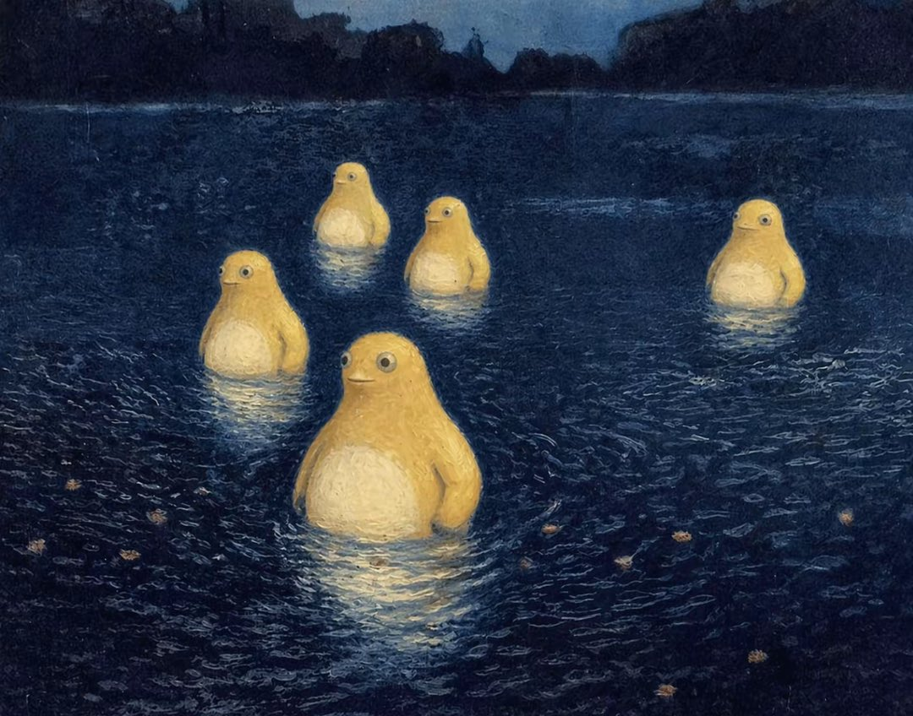

《河上的奶龙》是对挪威著名画家弗里茨·索洛（Frits Thaulow）1880年作品。作品描绘了宁静河面上几只优雅的奶龙，水面映照出周围景物的倒影，营造出神秘而安静的氛围。画面延续了索洛对水景的细腻刻画：深蓝色的水面通过丰富而流动的笔触表现出微妙的波纹变化，反射出环境的朦胧光影。奶龙以柔和的暖黄色呈现，其圆润的体态在水中形成轻微的倒影与光晕，与周围环境自然融合。艺术家通过对光线的控制，使奶龙周围的水面略显明亮，既强化了主体，又保持了整体画面的统一与和谐。作为19世纪挪威重要的风景画家之一，弗里茨·索洛以擅长描绘自然光线下的水面效果而著称。他的作品常通过细腻的观察与丰富的色彩变化，表现水流的动态与环境的静谧。在《河上的奶龙》中，这种对水面质感与光影变化的表现依然得以保留，并通过新的形象转化，呈现出一种介于传统自然描绘与当代视觉符号之间的独特效果。
